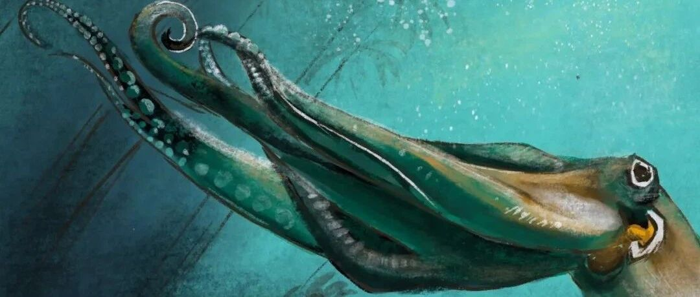

My Octopus Teacher.
这个周末看了一部非常精彩、感人且鼓舞人心的纪录片，
名字叫《我的章鱼老师》，非常非常推荐，观看链接放在最后面～
故事非常精彩，我不剧透，感兴趣的同学一定要看一下。

首先在这个故事中，我见识到了一只章鱼有多么聪明和勇敢。
虽然身为一个软体动物，
但可以游刃有余地生存在弱肉强食的海底世界，
遇到危险时会用贝壳当盾牌抵御危险，
一会儿装成一块圆润的石头，
一会儿装成一片翻滚中的海草，
机智又勇敢地和天敌"睡袍鲨"缠斗，
看得我是一会儿揪心一会儿拍手称快。
另外一点让我印象深刻的是它的顽皮，
拦住鱼群，破坏他们的队形，
"包抄"一只螃蟹或者一只龙虾当午餐，
"打倒"安置在一旁的录影机，
看到人类朋友时，会直愣愣地冲向他，给予他爱的抱抱。
最后让我非常震撼的就是它为了繁衍后代牺牲自己的伟大天性。
可可爱爱又惊心动魄地度过了非常短暂但却精彩的一生，
与它相比，我们虽然进化得比它更高级，
但生活好像还没有它的精彩，
这可能也是主人公一开始每天都想去探望它的原因吧。
远离大自然，人类用钢筋水泥搭建起心目中的"安稳"之后，
便在这"安稳"之中逐渐忘记了生命原本应该有的精彩。
章鱼的寿命虽然只有1-2年，
但却可以活得这么精彩，
我们有多于它几十倍的时间，
尽情地去创造、去体验吧～
纪录片在这边～一定要看呀～ https://b23.tv/OftXCWA
另外今天的加速视频在下面～欢迎点击观看～
也欢迎评论分享你的感受～
欢迎转发和"在看"哦～
下回见，Good Night